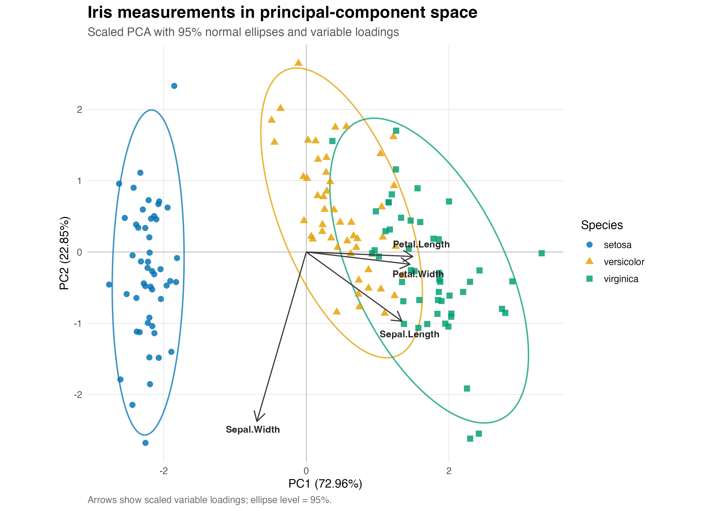

FigureForge Iris PCA report
FigureForge request: Turn the Iris measurements into a clear PC1-PC2 biplot, showing species structure, 95% group ellipses, and the variables that drive the projection.
Input: 150 rows × 5 columns from iris.csv.
Method and adaptation: The four measurement columns were centered and scaled, then analyzed with stats::prcomp. Species use both color and shape, normal ellipses summarize groups, and scaled loading arrows explain direction.
Case-grounded provenance
At the generation stage, FigureForge read the primary 20230925_PCA case evidence: case.md, plot.R, and the verified qa.md. The generation trace passed strict validation against those evidence files and this generated script. The public rerun is standalone: it reads only the supplied Iris CSV and does not access the private case.
The user-visible README and HTML do not display private paths, private source code, private data, or hashes. The hidden trace retains SHA-256 hashes for provenance auditing.
Schema mapping
- The case's feature-by-sample value matrix maps to row-wise Iris measurement columns.
- The case's sample group maps to
Species. - The case's
Dim.1/Dim.2roles map toPC1/PC2.
Adopted patterns
- A PC1-PC2 ordination composition with variance explained in both axis labels.
- Group encoding through points, color, and shape.
- Group-boundary ellipses layered with zero reference axes.
Departures
- Feature-by-sample input became row-wise Iris observations.
- Four panels became a single biplot.
FactoMineRbecamestats::prcomp.- Fixed limits became data-aware limits.
- Loading arrows were added as an explanatory extension.
Result: PC1 explains 72.962445% and PC2 explains 22.850762% of scaled variance (95.813207% cumulatively).

Variance summary
| Component | Eigenvalue | Explained % | Cumulative % |
|---|---|---|---|
| PC1 | 2.918498 | 72.962445 | 72.962445 |
| PC2 | 0.914030 | 22.850762 | 95.813207 |
| PC3 | 0.146757 | 3.668922 | 99.482129 |
| PC4 | 0.020715 | 0.517871 | 100.000000 |
Loading summary
| Variable | PC1 | PC2 | PC3 | PC4 |
|---|---|---|---|---|
| Sepal.Length | 0.521066 | 0.377418 | 0.719566 | -0.261286 |
| Sepal.Width | -0.269347 | 0.923296 | -0.244382 | 0.123510 |
| Petal.Length | 0.580413 | 0.024492 | -0.142126 | 0.801449 |
| Petal.Width | 0.564857 | 0.066942 | -0.634273 | -0.523597 |
Files
{kind=link}
Reproduce
From this directory, run Rscript 'plot.R' 'iris.csv' ..